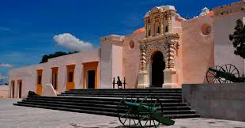
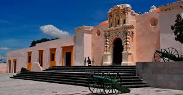

El Cinco de Mayo fecha de la conmemoración de la Batalla de Puebla. Marca la primera vez que el Ejército mexicano pudo derrotar a una potencia extranjera mejor preparada, en este caso los franceses. La batalla tuvo lugar en la actual ciudad de Puebla de Zaragoza el 5 de mayo de 1862, entre los ejércitos de México y Francia.
La batalla de Puebla fue un combate librado el 5 de mayo de 1862 en las cercanías de la ciudad de Puebla, entre los ejércitos de la República Mexicana, bajo el mando de Ignacio Zaragoza, y del Segundo Imperio Francés, dirigido por Charles Ferdinand Latrille, conde de Lorencez, durante la Segunda Intervención Francesa en México, cuyo resultado fue una victoria importante para los mexicanos ya que con unas fuerzas consideradas como inferiores lograron vencer a uno de los ejércitos más experimentados y respetados de su época. Pese a su éxito, la batalla no impidió la invasión del país, sólo la retrasó, sin embargo, sería la primera batalla de una guerra que finalmente México ganaría. Los franceses regresarían al siguiente año, con lo que se libró una segunda batalla en Puebla en la que se enfrentaron 35 000 franceses contra 29 000 mexicanos (defensa que duró 62 días), y lograrían avanzar hasta la Ciudad de México, lo que permitió establecer el Segundo Imperio Mexicano.
Octubre de 1861
Febrero de 1862
Asegurado el paso de Acultzingo, el 2 de mayo de 1862 la columna principal del ejército expedicionario francés salió de San Agustín del Palmar, en Veracruz, para cruzar la Sierra Madre Oriental y dirigirse hacia Puebla, paso obligado para llegar a la capital del país y que era además uno de los bastiones del Partido Conservador, donde esperaban ser recibidos "con una lluvia de rosas", como le aseguró Saligny a Napoleón III en una carta.4 El 3 de mayo por la noche, el general Zaragoza arribó a Puebla, dejando en su retaguardia una brigada de caballería para hostigar a los invasores. Los efectivos del Ejército de Oriente se organizaron por las calles desiertas de la ciudad, ya que la mayoría de la población era partidaria de la invasión.5
Zaragoza estableció su cuartel a unos cuantos metros de la línea de batalla, donde estableció el plan para la defensa de la plaza (ver tabla superior), que consistió en concentrar los pertrechos en el sur y oriente de la ciudad, esperando evitar que los franceses alcanzaran al área urbana de Puebla.
El 4 de mayo, los exploradores mexicanos volvieron con noticias de que una columna de conservadores a caballo, al mando de Leonardo Márquez y José María Cobos, marchaba por la zona de Atlixco para unirse con las fuerzas de Lorencez en el ataque a Puebla. Zaragoza envió una brigada de 2000 hombres bajo el mando de Tomás O'Horán y Antonio Carbajal, con el fin de detenerlo, lo cual lograron. Aunque sus fuerzas habían disminuido, los mexicanos se prepararon para la defensa de Puebla. Contaban con dos baterías de artillería de batalla y dos de montaña, cubriendo los fuertes con 1200 hombres y formando a otros 3500 en cuatro columnas de infantería con una batería de batalla y una brigada de caballería por el lado del camino a Amozoc

Octubre de 1861
Febrero de 1862
Como en toda batalla siempre existen consecuencias de estas.
Pueden ser materiales, vidas, territorio, etc.
en este apartado se demuestran las consecuencias que hubo despues.
Mientras se libraba la batalla, en el Palacio Nacional y en la Ciudad de México en general se vivía un ambiente de tensa espera. Lo último que se sabía de Puebla era el telegrama enviado por Zaragoza hacia las 12:30 del día, en el que avisaba que el fuego de artillería de ambos lados había iniciado. Luego, silencio. Ante la incertidumbre, el gobierno había hecho salir precipitadamente al general Florencio Antillón al mando de los Batallones de Guanajuato, quedando como guardianes de la capital sólo 2,000 hombres del Regimiento de Coraceros Capitalinos y algunos centenares de milicianos pobremente armados. Si las tropas guanajuatenses se perdían, la capital quedaría desprotegida.
consecuencias para los franceses
consecuencias para Mexico
En octubre de 1861, Francia, Inglaterra y España suscribieron la Convención de Londres, en la cual se comprometieron a enviar contingentes militares a México para reclamar sus derechos como acreedores por una deuda que ascendía alrededor de 80 millones de pesos, aproximadamente eran 69 millones para los ingleses, 9 millones para los españoles y 2 millones para Francia.
El contingente europeo, estaba compuesto de la siguiente manera:
• España: 6000 hombres al mando del General Juan Prim
• Francia: 3000 hombres dirigidos por el Contraalmirante Jurien de la Gravière.
• Reino Unido: 700 marines bajo el comando del Comodoro Dunlop.2
Poco después de reunirse, los representantes de los tres países enviaron un ultimátum al gobierno mexicano en el que pedían el pago de sus deudas; de lo contrario, invadirían el país. Juárez, quien gobernaba a un país que apenas empezaba a levantarse de la postración económica, respondió con un exhorto a lograr un arreglo amistoso, y los invitó a conferenciar. Acompañó ese mensaje con la derogación del decreto que suspendió los pagos. Al mismo tiempo, en vista de la posibilidad real de una invasión militar que buscara llegar hasta la Ciudad de México, ordenó el traslado de pertrechos y la fortificación de Puebla, así como crear una unidad, a la que se designó como Ejército de Oriente, que fue puesta bajo el mando del general José López Uraga. En vista del desempeño deficiente de este mando, fue destituido y en su lugar se designó a Zaragoza, quien dejó el Ministerio de Guerra y se dirigió a Puebla para organizar la oposición al avance francés con cerca de 10,000 hombres; cantidad mínima si se toma en cuenta el vasto territorio que debía cubrirse.
Al conocer sobre el avance, el general Alejandro Constante Jiménez al mando de 2000 soldados se unió al general Zaragoza, que partió de Puebla con 4000 soldados para salir al encuentro de los franceses, quienes ya sostenían escaramuzas con guerrilleros. El comandante mexicano había enfrentado diversos problemas para conformar su ejército. Ante la falta de voluntarios y a que aún se mantenían hostilidades con grupos conservadores remanentes de la Guerra de Reforma, se había recurrido a la leva. Aunque se contaba con un cuerpo de oficiales joven pero experimentado, la mayor parte de la tropa carecía de la disciplina mínima, y estaba mal equipada y alimentada. En los días anteriores a la batalla, Zaragoza solicitó una y otra vez al alto mando en la Ciudad de México, el envío urgente de recursos económicos, ya que no podía costear ni siquiera los alimentos para las tropas. Para colmo, la explosión de un polvorín en la excolecturía de los diezmos del poblado de San Andrés Chalchicomula (hoy Ciudad Serdán), ocurrida el 6 de marzo, había matado a 1,322 soldados de la Brigada de Oaxaca enviados por el general Ignacio Mejía para incorporarse al Ejército de Oriente.


Los representantes aceptaron el llamado y en febrero de 1862 se reunieron con los ministros juaristas del Exterior, Manuel Doblado, y de Guerra, Ignacio Zaragoza, en la hacienda de La Soledad, cerca de Veracruz. Gracias a la habilidad como negociador de Doblado se firmaron los Tratados preliminares de La Soledad, en los que se obtuvo el reconocimiento como interlocutor para el gobierno de Juárez y se garantizó el respeto a la integridad e independencia del país. Además, se convino que las negociaciones sobre la deuda se realizaran en Orizaba, donde se establecerían las fuerzas aliadas, además de Córdoba y Tehuacán, para evitar el rigor del clima tropical del puerto; si no se llegaba a un acuerdo, se retirarían a la costa para así comenzar las hostilidades.
El 5 de marzo, cuando aún se realizaban las negociaciones en Orizaba, llegó a Veracruz un contingente militar francés bajo el mando de Charles Ferdinand Latrille, conde de Lorencez, quien relevó en el mando a Jurien de la Gravière y se dirigió a Tehuacán. También llegó el general conservador Juan Nepomuceno Almonte, quien de inmediato se proclamó "jefe supremo de la nación" y empezó a reunir a las tropas conservadoras, remanentes de la Guerra de Reforma, para apoyar a los franceses.
En abril de 1862 la alianza tripartita se rompió debido a que España e Inglaterra se dieron cuenta de que Francia tenía un interés soterrado, de tipo geopolítico, bajo el reclamo económico: derrocar al gobierno republicano de México para establecer una monarquía favorable a su política colonial, con miras a contrarrestar el creciente poderío de Estados Unidos.[cita requerida] De las instrucciones de Napoleón III dadas al jefe militar de la expedición, se sabe que el objetivo imperialista francés consistía en ampliar sus dominios
A las 9:15 de la mañana del 5 de mayo, los franceses aparecieron en el horizonte, avanzando desde la cercana Hacienda de Rementería, cruzando fuego con las guerrillas de caballería que se batían en retirada y que no se replegaron hasta que las líneas francesas estuvieron formadas y listas para avanzar. La batalla se inició en forma a las 11:15 de la mañana, anunciándose con un cañonazo desde el Fuerte de Guadalupe y acompañado por los repiques de las campanas de la ciudad. En ese momento se dio una maniobra sorpresiva: la columna francesa, que venía avanzando en orden de oriente a poniente, se dividió en dos: la primera, compuesta por aproximadamente 4000 hombres y protegida con su artillería, dio un violento viraje hacia la derecha y se dirigió hacia los fuertes; mientras que la segunda columna, compuesta por el resto de la infantería, quedó como reserva.
Los conservadores Almonte y Antonio de Haro y Tamariz, que acompañaban a los franceses, habían sugerido que el ataque se dirigiera a las inmediaciones del ex Convento del Carmen, en el sur de la ciudad, tomando como antecedente lo que sucedió en el sitio durante la Guerra con Estados Unidos. Lorencez, confiado en la superioridad de sus tropas, así como en el auxilio que esperaba del contingente de Márquez, desoyó el consejo y decidió concentrar el ataque en los fuertes, donde los mexicanos contaban con la ventaja. Zaragoza advirtió la maniobra y rápidamente replanteó su plan de batalla, movilizando las tropas hacia las faldas del cerro. El 6o. Batallón de la Guardia Nacional del Estado de Puebla,6 bajo el mando del entonces coronel Juan Nepomuceno Méndez, fue el primer cuerpo del Ejército de Oriente en hacer frente a los franceses, al ubicarse en la línea comprendida entre los fuertes, y rechazar su ataque.7 Zaragoza hizo avanzar a las fuerzas de Berriozábal a paso veloz entre las rocas, situándolas entre la hondonada que separa a Loreto y Guadalupe. Mientras, el general Antonio Álvarez con su brigada protegió el flanco izquierdo de los reductos.


A las dos y media de la tarde, cuando se empezaba a perfilar una victoria para los mexicanos, Lorences se dispuso a lanzar el último asalto, dirigiendo a los Cazadores de Vincennes y el Regimiento de Zuavos hacia Guadalupe, mientras ponía en marcha una segunda columna de ataque compuesta de los restos de los cuerpos de batalla —excepto el 99 de Línea, el cuál quedó de reserva en el campamento francés—, para atacar por la derecha de la línea de batalla mexicana.
Ante esta situación, salieron a su encuentro los Zapadores de San Luis Potosí, al mando del general Lamadrid, librándose un terrible combate a la bayoneta. Una casa situada en la falda del cerro fue el objetivo. Los franceses la tomaron y se guarecieron en ella, siendo desalojados por los zapadores; la recobraron y de nuevo fueron expulsados por las tropas de Lamadrid. Un cabo mexicano de apellido Palomino se mezcló entre los zuavos y se batió con ellos cuerpo a cuerpo, posesionándose de su estandarte como botín de guerra al caer muerto el portador del mismo. Este momento significó un golpe anímico a favor de los defensores.
Ya entrada la tarde cayó un aguacero sobre el campo, lo cual dificultó el avance a las tropas francesas. Zaragoza dispuso que el Batallón Reforma de San Luis Potosí saliera en auxilio de los fuertes. En Loreto había un cañón de 68 libras que causaba enormes estragos en la filas francesas. Los zuavos hicieron una carga de infantería desesperada para apoderarse de esa pieza. El artillero mexicano, sorprendido por la rapidez de los franceses, tenía en sus manos la bala de cañón que no alcanzó a colocar en la boca de fuego. Un zuavo apareció frente a él y tras éste el resto del cuerpo que, una vez apoderados de ese fortín, levantarían la moral francesa y podría perderse la victoria conseguida. El artillero arrojó la bala al soldado francés, que herido mortalmente por el golpe en la cabeza rodó al foso del parapeto. Luego de que este asalto fue rechazado, los franceses retrocedieron siendo perseguidos por el Batallón Reforma.
 
 El saldo final de la batalla fue de 476 muertos y 345 heridos del lado francés
Antes de la batalla, las arengó diciéndoles que si bien los franceses eran considerados "los primeros soldados del mundo", ellos eran "los primeros hijos de México", lo cual tuvo tal efecto en la moral de sus soldados que su determinación por defender la plaza ante los invasores compensó sus carencias materiales y de disciplina. Además, no temió tomar decisiones arriesgadas, como prescindir de los 2000 efectivos que O'Horan se llevó para batir a Leonardo Márquez, y en el curso de la batalla actuó con serenidad y efectividad. Se le considera héroe nacional y en su honor, tiempo después, Juárez renombró a la ciudad como Heroica Puebla de Zaragoza.

El saldo final de la batalla para mexico fue de 83 muertos, cerca de 131 heridos y 12 desaparecidos para el Ejército de Oriente.
El 5 de septiembre de 1862, todavía acuartelado en Puebla, el general Zaragoza contrajo tifo y falleció tres días después.10 Lo sustituyó en el mando del Ejército de Oriente el general Jesús González Ortega, quien se encargaría de la defensa de la ciudad ya que se esperaba el regreso de los franceses, reagrupados y con refuerzos, lo cual sucedió en marzo del siguiente año. Los historiadores concuerdan en señalar el talento de Zaragoza como organizador y motivador de sus tropas.